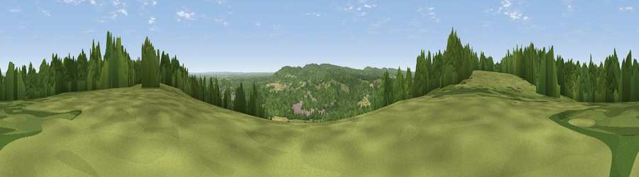

Viewpoint near Westcott
#26941 in England · top 13% of its area beats it · near Westcott · open accessWhere it is
The exact computed spot (TQ 14125 50275). Click the marker for map links.
Public access: this spot lies on mapped open-access land (CRoW Act 2000) — you may roam here on foot. Computed from Natural England's CRoW access layer and OpenStreetMap rights of way — not the legal definitive map. Always verify locally.
The view, rendered

A 360° render of this exact spot computed from the terrain model, tree cover and land cover — summer colours, afternoon light, calibrated against photographs of famous viewpoints. Real trees, hedges and buildings will differ in detail.
The panorama
Grey silhouette: terrain skyline in each direction (720 bearings, Earth curvature and refraction included). Dashed green: skyline with trees (+15 m) and buildings (+8 m) as obstacles. Blue strip: how far the ground is visible on each bearing.
Where the view opens
Wedge length = distance to the farthest visible ground on that bearing (vegetation-aware). Rings at 10, 25 and 50 km.
What fills the view
54% woodland · 33% grassland · 9% cropland · 4% built-up
Angular shares of the visible panorama (visual magnitude), not map area. Landscape diversity 0.46 (0–1 Shannon).
Key numbers
More beautiful places nearby
The staircase of upgrades: each row has a higher view potential than everything closer. Driving times are estimates from straight-line distance, calibrated against real road routing — check an actual route before setting out.
| Place | Direction | Drive | Score |
|---|---|---|---|
| Longmoor | S · 3 km | ~6 min | 45.5 |
| Box Hill Viewpoint | ENE · 4 km | ~9 min | 49.8 |
| Viewpoint near Box Hill Village | E · 5 km | ~12 min | 66.7 |
| Viewpoint near Coldharbour | S · 7 km | ~14 min | 70.0 |
| Viewpoint near Fernhurst | SW · 30 km | ~48 min | 75.1 |
| Chanctonbury Ring | S · 38 km | ~57 min | 87.0 |
| Firle Beacon | SE · 56 km | ~78 min | 88.9 |
| Viewpoint near Niton | SW · 98 km | ~123 min | 89.2 |
51.24025, -0.36651 · source: screening · position refined by local search. Computed location — check access rights before visiting.